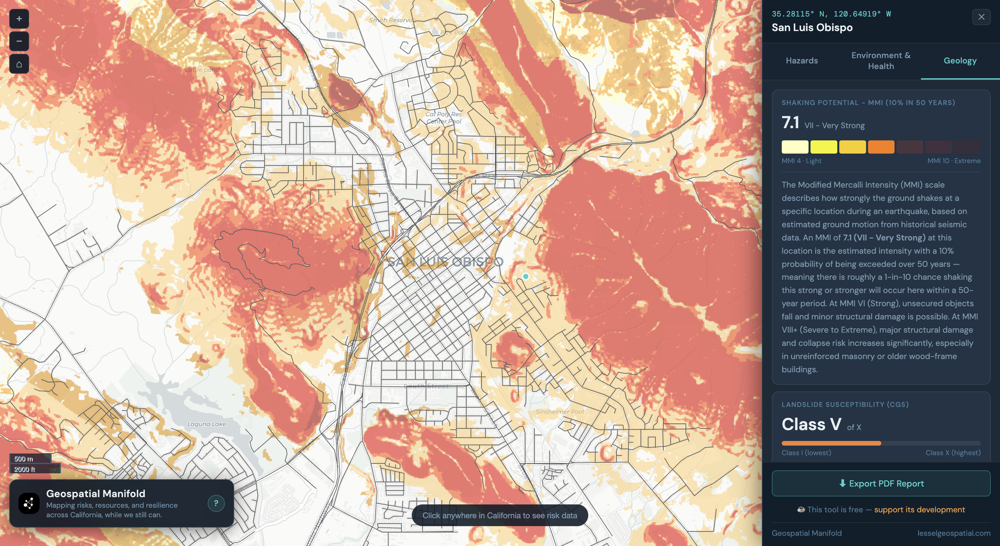
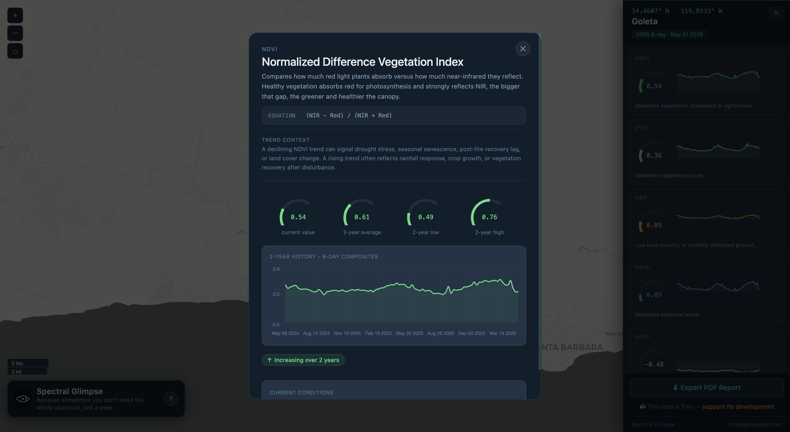
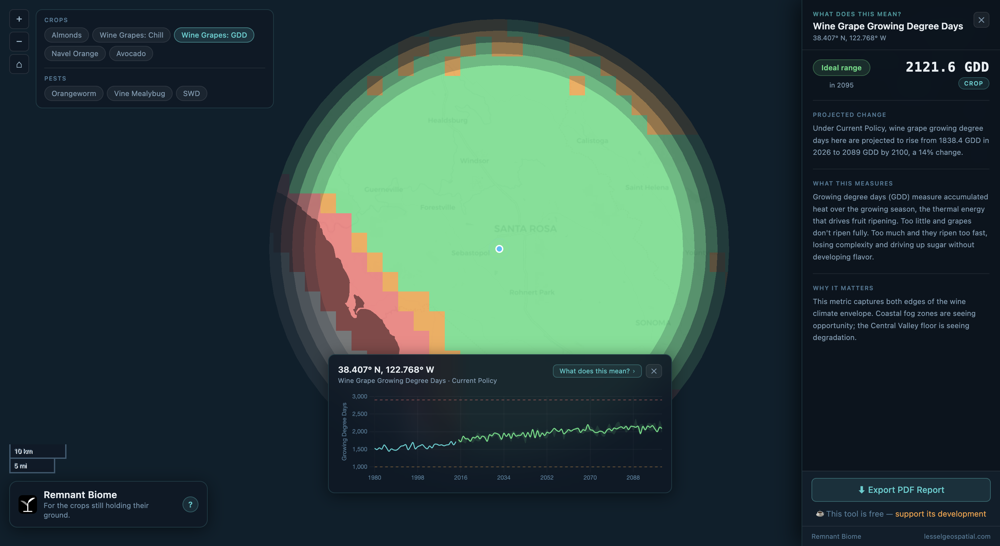

Turns out everything has coordinates.
Building open-source tools and research at the intersection of remote sensing, disaster risk, and urban resilience.

A pre-disaster urban resilience auditing platform for city planners. Analyzes road network vulnerability and identifies critical failure points before disaster strikes, not after.

Because sometimes you don't need the whole spectrum, just a peek. An on-demand spectral index platform for California. Click any point on the map to sample six satellite-derived indices with two years of 8-day history. Powered by NASA VIIRS data, updated automatically every 8 days.

Mapping how California's agricultural viability zones are shifting under climate change, from 1980 to 2100. Explore seven derived climate metrics across four crops and three pests, computed from LOCA2-Hybrid downscaled climate projections under multiple emissions scenarios. A static, no-backend tool built on precomputed data underpinning the Fifth California Climate Assessment.
A daily geospatial news briefing with an agenda, to find the ground truth in geospatial news. Curated by AI, filtered by taste, delivered with a slight edge.
Jerrod Lessel is a senior geospatial analyst and remote sensing researcher with deep experience in production-scale satellite imagery analysis, climate monitoring, and spatial modeling.
Previously at Gro Intelligence for eight years, building crop classification systems, flood and drought monitoring pipelines, and remote sensing methodology across dozens of countries using Google Earth Engine. Former fellow with NASA DEVELOP and research staff at Columbia University's International Research Institute for Climate and Society. Currently a Senior Geospatial Data Scientist and Modeler at Caltrans.